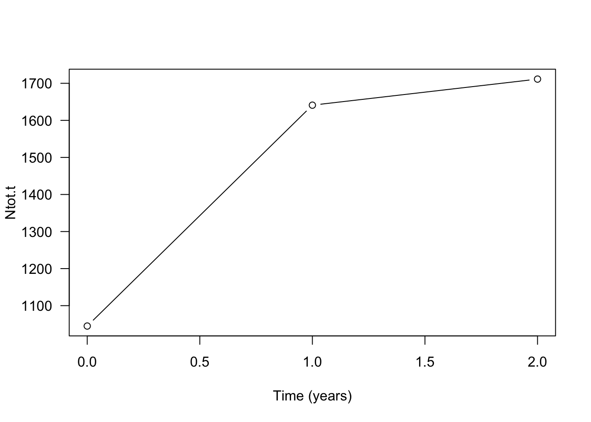
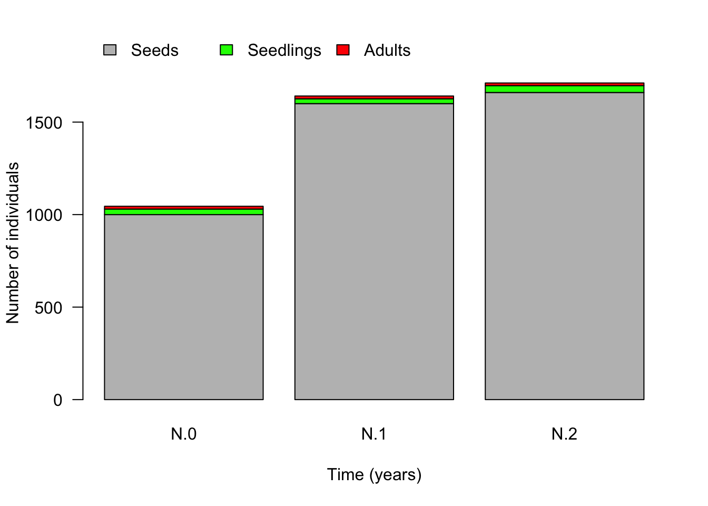
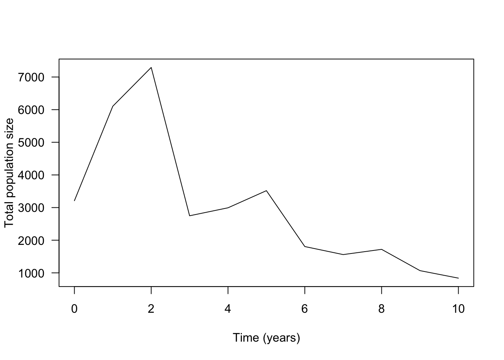

Using the example from the lecture, you will in this exercise apply matrix multiplication to project population dynamics for some time steps into the future. At the end of this part, you should complet the following tasks.
Project the population ten years into the future and describe how the population changes in both absolute and relative numbers.
Compute the growth factor \(\lambda\) for ten years and describe how it changes over time.
Do the computations under (1) and (2) for three different initial population vectors \(N_0\), namely: \(N_0=(1000, 30, 15)\), \(N_0=(10, 0, 0)\) and \(N_0=(0, 10, 0)\). How do the results differ from each other when using different starting vectors?
The following code shows how to define a population projection matrix in R. We here use the three-by-three matrix from the lecture.
transition.matrix <- matrix(c(0.1,0,100,0.02,0.2,0,0,0.2,0.6), nrow=3, ncol=3, byrow=T)
transition.matrix## [,1] [,2] [,3]
## [1,] 0.10 0.0 100.0
## [2,] 0.02 0.2 0.0
## [3,] 0.00 0.2 0.6We enter the three-dimensional vector describing the initial population composition \(N_0\) as a matrix consisting of one column and three rows (in other words, as a column vector).
N.0 <- matrix(c(1000, 30, 15), nrow=3, ncol=1, byrow=T)
N.0## [,1]
## [1,] 1000
## [2,] 30
## [3,] 15In order to obtain the vector describing the population composition one time step into the future, we multiply the population projection matrix transition.matrix from the right with the current population vector N.0. This type of multiplication is executed in R using the symbol %*%.
(N.1 <- transition.matrix %*% N.0) # the parentheses around a command make that the vector N.1 is immediately shown, that is, without explicitly asking for it as was done in the two previous commands.## [,1]
## [1,] 1600
## [2,] 26
## [3,] 15The next piece of code shows how you can alter the code above to produce to the population vector N.2 describing the population compostion two time steps into the future.
(N.2 <- transition.matrix %*% N.1)## [,1]
## [1,] 1660.0
## [2,] 37.2
## [3,] 14.2Use the this procedure to produce the population vectors for the first ten time steps, N.1, N.2,..., N.10. How do you have to adapt the code to do this?
Next, compute the total number of individuals at time t=0, t=1 until t=10 using the command sum(). Below you see the code showing how to do this for the first three time steps.
(Ntot.0 <- sum(N.0)) ## [1] 1045(Ntot.1 <- sum(N.1))## [1] 1641(Ntot.2 <- sum(N.2))## [1] 1711.4Next, let us create a time series plot. With this we mean a plot with time on the x-axis and Ntot on the y-axis. The next piece of code shows how to do that for the first three time steps, Ntot.0, Ntot.1 and Ntot.2.
plot(x=c(0:2), y=c(Ntot.0, Ntot.1, Ntot.2), xlab="Time (years)", ylab="Ntot.t", las=1)
If you have computed to Ntot for the first ten time steps you can add them to the plot by changing c(0:2) to c(0:10) (the points on the axis) and y=c(Ntot.0, Ntot.1, Ntot.2) to y=c(Ntot.0, Ntot.1, Ntot.2, Ntot.3, Ntot.4, Ntot.5, Ntot.6, Ntot.7, Ntot.8, Ntot.9, Ntot.10) (the values on the y-axis) in the above code.
Next, let’s have a look at the population composition. How is the total number of individuals distributed over the different life-history states? Thus, let us first plot the population vectors N.0, N.1 and N.2in form of a bar plot.
par(xpd=T) # allows plotting on margin (for legend)
barplot(cbind(N.0, N.1, N.2), las=1, col=c("grey", "green", "red"), names.arg=c("N.0", "N.1", "N.2"), ylab="Number of individuals", xlab="Time (years)")
legend(x=0.1, y=2000, bty="n", legend=c("Seeds", "Seedlings", "Adults"), fill=c("grey", "green", "red"), horiz=T)
Can you adapt this chunk of code so as to include the data for the all time steps until t=10?
It is also common (and informative) to plot the population vectors as relative numbers to show what fraction of the total population belongs to each life history state. For this we have to divide the number of individuals in each state by the total population size at that time step.
barplot(cbind(N.0/Ntot.0, N.1/Ntot.1, N.2/Ntot.2), col=c("grey", "green", "red"), las=1, names=c("N.0", "N.1", "N.2"), ylab="Proportion of individuals", xlab="Time (years)")
legend(x=0.2, y=0.8, bty="n", legend=c("Seeds", "Seedlings", "Adults"), fill=c("grey", "green", "red"), horiz=F)Again, adapt the last code chunk so as to incorporate the whole time series up until t=10 into this graph. What do you observe in terms of the relative state distrbution?
Finally, to calculate the growth factor \(\lambda\) we have to divide the total population size of two consecutive time steps by each other. For example, the value of \(\lambda\) for the first time step equals
(lambda.1 <- Ntot.1/Ntot.0)## [1] 1.570335Next, compute the values of \(\lambda\) up until the 10th time step.
(lambda.2 <- Ntot.2/Ntot.1)and so forth.
Finally, let’s make a plot that shows how \(\lambda\) changes over time from \(t=0\) to \(t=10\).
plot(x=c(1:10), y=c(lam.1, lam.2, lam.3, lam.4, lam.5, lam.6, lam.7, lam.8, lam.9, lam.10), type="l", xlab="Time (years)", ylab="lambda", las=1)Once you arrived here, please answer the three questions posed at the beginning of this seection.
Consider a population of a rare meadow plant. In this exercise, we explore how we can use matrix models to investigate the efficiency of different conservation strategies. Assume that after an intensive period of data collection we determined the following population transition matrix.
meadow.matrix <- matrix(c(0.001,0,200,0.01,0.2,0,0,0.2,0), nrow=3, ncol=3, byrow=T)
meadow.matrix## [,1] [,2] [,3]
## [1,] 0.001 0.0 200
## [2,] 0.010 0.2 0
## [3,] 0.000 0.2 0and the initial population vector N.0 given by
N.0 <- matrix(c(3000, 180, 30), nrow=3, ncol=1, byrow=T)
N.0## [,1]
## [1,] 3000
## [2,] 180
## [3,] 30At the end of this exercise you should answer the following questions.
Draw the life cycle graph corresponding to this matrix. What kind of life history does this plant have?
Calculate the projected population growth rate \(\lambda\) and the total population size N.tot for 10 years and plot them as a function of time. After how many years would this population be expected to have less than 10 adults where it would be considered severely endangered?
To protect this population, two different measures are considered. For each of these methods, project the population dynamics and plot the number of adults against time. Which conservation measure is preferable?
Adding 100 adult plants from a different population once at year \(t=0\).
Increasing recruitment of juveniles from seeds by creating small open sites in the meadow each year. This is expected to result in a transition probability from seeds to juveniles equal to \(0.025\).
In order to make investigating these questions easier we will need some additional R-magic. In particular, we want to use R-code that let’s us compute a whole time series with a single command. For this, we make use of what is called a loop.
Before we “run” a loop to create a time series, we create a so-called data frame in which we can store the data from the time series of lenght 10. We name this data frame pop.dev abbreviating population development and initially fill all etries with NA(for “not available”). You can think of a data frame as an EXCEL sheet but in R. Thus, a data frame is a matrix where we can give names to rows and columns describing what is stored in the different cells of the data frame.
pop.dev <- data.frame(time=c(0:10), Seeds=rep(NA,11), Juv=rep(NA,11), Adults=rep(NA,11), N=rep(NA,11), lambda=rep(NA,11))Let’s check how the data frame looks at the moment.
pop.dev## time Seeds Juv Adults N lambda
## 1 0 NA NA NA NA NA
## 2 1 NA NA NA NA NA
## 3 2 NA NA NA NA NA
## 4 3 NA NA NA NA NA
## 5 4 NA NA NA NA NA
## 6 5 NA NA NA NA NA
## 7 6 NA NA NA NA NA
## 8 7 NA NA NA NA NA
## 9 8 NA NA NA NA NA
## 10 9 NA NA NA NA NA
## 11 10 NA NA NA NA NALet us fill the first column of the data frame with the population vector at time zero.
pop.dev[1, "Seeds"] <- N.0[1]
pop.dev[1, "Juv"] <- N.0[2]
pop.dev[1, "Adults"] <- N.0[3]
pop.dev[1, "N"] <- sum(N.0)Check whether this was entered correctly by printing the data frame.
pop.devNext, let us “wrap” a loop of length 10 around the matrix multiplication.
N.t <-N.0 # this creates a new vector, called N.t, and we give it the values that are stored in N.0
for (n in 2:11) # the loop "runs" from n=2 to n=11 (representing the years 1 to 10 in the data frame)
{
N.t.plus.1 <- meadow.matrix %*% N.t # computes the population vector for the next time step
pop.dev[n, "N"] <- sum(N.t.plus.1) # the following lines enter the outcome into the data frame
pop.dev[n, "Seeds"] <- N.t.plus.1[1]
pop.dev[n, "Juv"] <- N.t.plus.1[2]
pop.dev[n, "Adults"] <- N.t.plus.1[3]
pop.dev[n, "lambda"] <- sum(N.t.plus.1)/sum(N.t)
N.t <- N.t.plus.1 # updates the current values stored in N.t
}If you wish, you can again inspect the data frame by printing it.
pop.devWith the following command, we can plot the numbers for a specific column in the data frame, for example, the total population size N.
plot(pop.dev$time, pop.dev$N, type="l", ylab="Total population size", xlab="Time (years)", las=1)
In order to plot the entries of another column, we have to add the name of that column to the second pop.dev$. For example, if we want to plot the number of adults we have to replace pop.dev$N with pop.dev$Adults (and change the name of the label on the y-axis accordingly).
plot(pop.dev$time, pop.dev$Adults, type="l", ylab="Number of Adults", xlab="Time (years)", las=1)And here the code if you wish to plot the growth factor \(\lambda\) as a function of time.
plot(pop.dev$time, pop.dev$lambda, type="l", ylab="Growth factor lambda", xlab="Time (years)", las=1)Now you have to decide how to change the above code so that it takes into account the two different conservation strategies.
Once you have the time series for the three different scenarios (population without conservation, population with measurement 1 and population with measurement 2), you could use code like the following to visualize the results in a single figure.
plot(pop.dev$time, pop.dev$Adults, type="l", ylab="Number of Adults", xlab="Time (years)", las=1, col="red", ylim = c(0, 60))
lines(pop.dev.strategy.1$time, pop.dev.strategy.1$Adults, col="green")
lines(pop.dev.strategy.2$time, pop.dev.strategy.2$Adults, col="blue")
legend("top", legend=c("no measure", "Meth. 1", "Meth. 2"),
col=c("red", "green", "blue"), lty=c(1,1,1), bty="n", horiz=TRUE, cex=0.9)